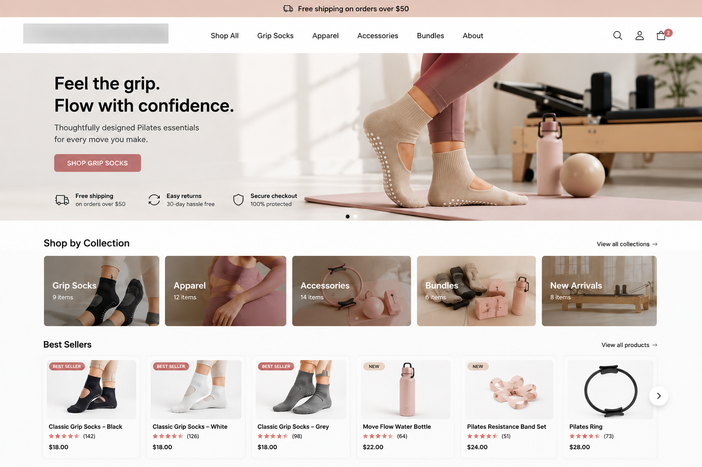
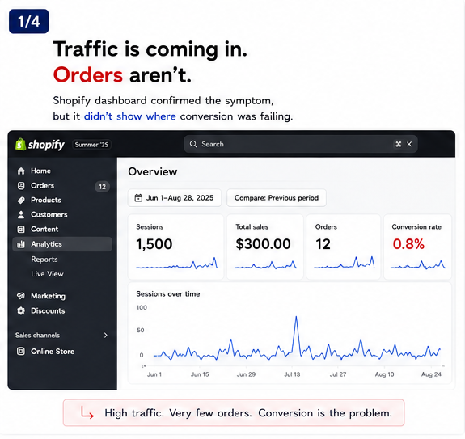
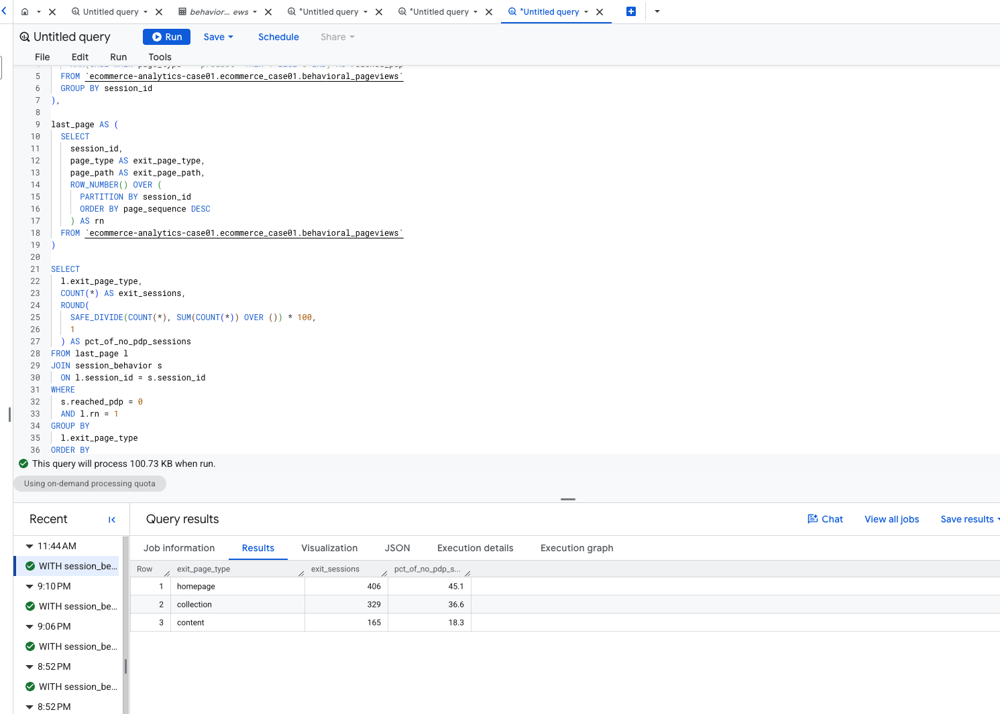
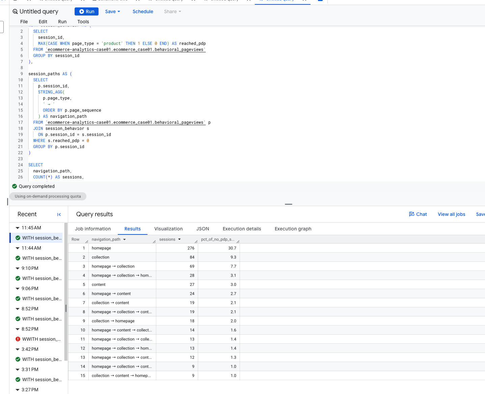
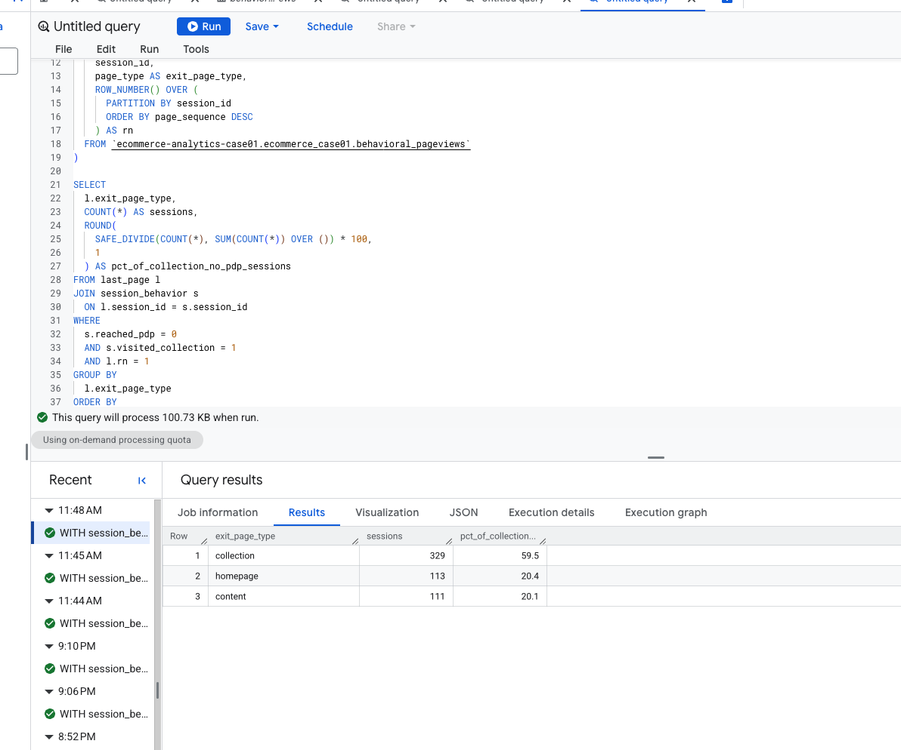

A 90-day ecommerce diagnosis to locate where visitors stopped progressing from traffic to purchase—and determine what the evidence justified investigating next.
Controlled simulation. No real customer data is used.

A newly launched, owner-operated Pilates ecommerce store had traffic but weak sales. The challenge was not generating possible explanations—it was deciding where the evidence said to investigate first.
90-day analysis · 15 products / 26 variants · grip socks as hero category

| Sessions | 1,500 |
| Product Detail View sessions | 600 |
| Add to Cart sessions | 30 |
| Orders | 12 |
| Revenue | $271 |
Traffic existed, but orders remained low. The dashboard showed the outcome; the analysis needed to locate where the journey was failing.
| Sessions | 1,500 |
| Product View sessions | 600 |
| Orders | 12 |
| Store CVR | 0.8% |
| Revenue | $271 |
| Paid media spend | $1,050 |
The case separates source-system validation from the controlled analytical dataset. GA4 is not used in the current analysis.
Real Product / Variant structure, 15 products and 26 variants, API reconciliation, and native analytics capability validation.
Sessions, funnel events, behavioral pageviews, customers, orders, order lines, and marketing spend.
Central analytical environment for validation, session-level transformations, funnel diagnosis, and behavioral analysis.
Start broad, narrow the weak stage, test explanations, reject unsupported stories, and only then decide what evidence is needed next.
The first job was to locate the weak stage, not guess at its cause.
The funnel was decomposed again to ask whether visitors were even reaching individual product pages.
Phase 2 tested whether No-PDP visitors were simply low-engagement sessions that bounced immediately.
| Behavior | No PDP | Reached PDP |
|---|---|---|
| Bounce rate | 43% | 42% |
| Avg pages / session | 2.58 | 2.67 |
| Avg duration | 96 sec | 117 sec |
These behavioral flags overlap because a session can visit multiple page types.
Bounce and pages/session were essentially the same. The No-PDP gap is not primarily explained by visitors simply leaving immediately.
Exit-page and navigation analysis narrowed the behavior further.



The evidence is strong enough to prioritize the next area of work, but not strong enough to claim which UI, merchandising, or pricing factor caused the behavior.
Instrument Product Card Impression → Product Card Click → PDP.
Product imagery, price / promotion visibility, card information, product ordering, and mobile interaction remain hypotheses—not conclusions.
Change one meaningful element at a time and measure whether Collection → PDP progression improves. Formal A/B testing may be limited by traffic volume.
Collection → PDP should be the next measurement and optimization priority.
That imagery, pricing, CTA clarity, assortment, merchandising, or mobile UX caused the friction.
Because ecommerce was a new domain, AI accelerated domain exploration, SQL drafting, and hypothesis generation. Analytical judgment centered on metric denominators, source/grain decisions, benchmark comparability, evidence thresholds, interpretation, and when to reject unsupported explanations.